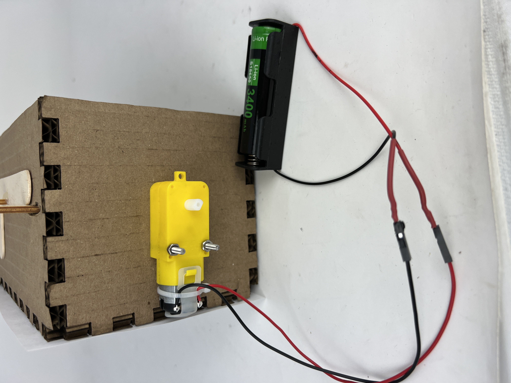

Week 3: Fabrication
So you're telling me a shrimp fried this rice?

This week, I put my CAD and fabrication skills to use by creating a kinetic sculpture. I worked on creating a sculpture of a shrimp frying rice. Originally, I was going to make some lame marble roller coaster but I came up with this genius idea when I was showering.
The sketch I made immediately after I finished showering versus the final product.
Movement


The movement of the shrimp and wok are produced by cams which convert rotational movement into linear movement. By changing the design of the cams, I was able to encode a smooth up and down movement for the shrimp and a more abrupt jolt in the wok to mimic the movement of "pan tossing".
Whereas the shrimp is free standing, I attached a pivot to the wok in order to give it the desired "tossing" motion.
Motor and Power
In order to actually attach the motor to the box of my kinetic sculpture, I used two M3 screws and some cleverly placed cutouts.
The shaft of the motor is connected to a press-fit laser cut part which is then glued to another press-fit part that connects to the square dowel. The tolerances were a bit finnicky to get working, but now I have a secure but non-permanent way to connect the motor shaft to the square dowel!
My whole contraption is powered by a lithium ion battery pack which I soldered onto the motor.
Art
I created all the art within Onshape itself which surprisingly wasn't that bad. I ended up tracing some images of shrimp and fried rice and it turned out great. The engraving came out really nice too (besides when it caught on fire)!
Reflection

Overall, I'm pretty satisfied with how my kinetic sculpture turned out. While it isn't the prettiest or most technically complex, I think its a good balance of form and function: it works completely fine without assitance and it's a pretty funny joke. If I were to continue interating, I would definetly fine tune the tolerances of the cutouts and account of the rotational movement of the wok in CAD instead of just using a box cutter. It would also be nice to give the Shrimp and Wok more exaggerated movements with better cams.
This week also taught me why I shouldn't procrastinate these assignements!!!